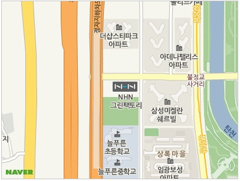

- 순서형 목록
- 순서형 목록
- 순서형 목록
- 용어의 제목
- 용어의 설명, 해설, 해석
- 용어의 설명, 해설, 해석
- 용어의 설명, 해설, 해석
- 용어의 제목
- 용어의 설명, 해설, 해석
- 용어의 제목
- 용어의 설명, 해설, 해석
- 용어의 제목
- 용어의 설명, 해설, 해석
CONTACT
네이버본사
- ADDRESS
-
경기도 성남시 분당구 불정로 6 NAVER그린팩토리 (우)13561
-
NAVER Green Factory, 6 Buljeong-ro, Bundang-gu, Seongnam-si, Gyeonggi Province, South Korea
- TEL
-
1588-3830

인물정보
- 유재석 MC, 개그맨
-
- 출생
- 1972년 8월 14일, 서울특별시
- 신체
- 178cm, 65kg
- 소속사
- FNC엔터테인먼트
- 가족
- 배우자 나경은
- 데뷔
- 1991년 제1회 KBS 대학개그제
- 수상
- 2019년 MBC 방송연예대상 예능부문 남자 신인상 (놀면 뭐하니?. 유산슬)
- 2019년 SBS 연예대상 대상 (런닝맨)
- 겨울! 보쌈, 파래, 굴을 이용한 '기(氣)'찬 밥상
- 사람이 안 하던 행동을 하면 '내일은 해가 서쪽에서 뜨겠다고들 합니다. 겨울들어 유독 감기를 자주 앓는 부모님을 위해 ...
- "내 이름 부르지 마"라고 하시는 할아버지의 사정.
- 간호사 7년차. 환자분들 앞에서는 늘 허리 숙여 모시는 걸 생명처럼 여기지만 '난이도'가 참으로 높은 어르신들의 성함 앞에서는 우리 간호사들도...
- 귀차니스트를 위한 간단하고 효과적인 다이어트 비법
- 우리의 건강을 지키는 데는 여러가지 방법이 있다. 그 중 가장 손쉽게 건강을 지킬 수 있고 늘 하고 있는 것이 바로 호흡인데, 이 호흡은...
- 가수 강원래 그가 말한다 "그거 참 쉽습니다."
- 대한민국 최고의 가수에서 원조 한류스타로 '쿵따리 샤바라 신드롬'을 일으키며 최고의 콤비 구준엽과 함께 세계를 누비던 강원래는 지금 또 다른 꿈을 위해 뛰는 맹렬 엔터테이너다...